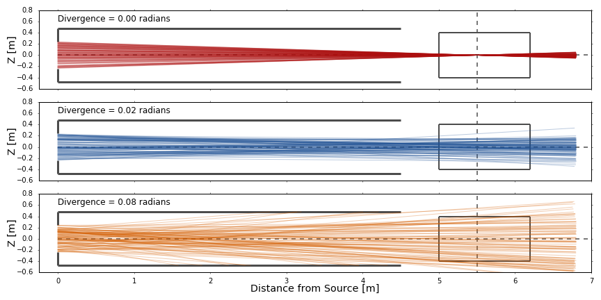
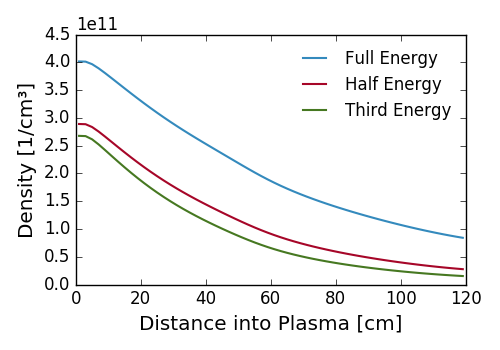

The neutrals densities calculated by FIDASIM are stored in a 3D grid. FIDASIM requires that the grid be axis-aligned to easily track particles through the grid. However, it is extremely useful to be able to align the grid along the beam centerline. To facilitate this FIDASIM allows the user to define arbitrary Cartesian coordinate system (beam grid coordinates) that all calculations are done in.
FIDASIM uses Tait-Bryan rotation angles (alpha,beta,gamma) to define a intrinsic rotation matrix, \(R\), that is used to transform from beam grid coordinates(xyz) to machine coordinates(uvw)
$$ \mathrm{uvw = R \cdot xyz + origin} $$
If the rotation angles and origin are set to zero then the rotation matrix is the Identity matrix and the coordinate system is identical to machine coordinates (Standard Cartesian).
Understanding these variables can be difficult and can best be described by an example.
alpha (ccw = +angle, cw = -angle)betagammaorigin(x|y|z)_(min|max) by this coordinate system with your index finger being the new +x-axisThe beam grid is defined in the namelist file ([runid]_inputs.dat) and are defined as follows
| Variable | Type | Rank | Dimensions | Units | Description |
|---|---|---|---|---|---|
nx |
Int16 | 0 | NA | NA | Number of cells in the X direction |
ny |
Int16 | 0 | NA | NA | Number of cells in the Y direction |
nz |
Int16 | 0 | NA | NA | Number of cells in the Z direction |
xmin |
Float64 | 0 | NA | cm | Minimum X value in beam grid coordinates |
xmax |
Float64 | 0 | NA | cm | Maximum X value in beam grid coordinates |
ymin |
Float64 | 0 | NA | cm | Minimum Y value in beam grid coordinates |
ymax |
Float64 | 0 | NA | cm | Maximum Y value in beam grid coordinates |
zmin |
Float64 | 0 | NA | cm | Minimum Z value in beam grid coordinates |
zmax |
Float64 | 0 | NA | cm | Maximum Z value in beam grid coordinates |
alpha |
Float64 | 0 | NA | rad | Tait-Bryan rotation angle about z-axis |
beta |
Float64 | 0 | NA | rad | Tait-Bryan rotation angle about y'-axis |
gamma |
Float64 | 0 | NA | rad | Tait-Bryan rotation angle about x"-axis |
origin |
Float64 | 1 | [3] | cm | Beam grid origin in Machine Coordinates |
A neutral beam is defined by a source position and an axis such that a position along the beam centerline is defined as $$\vec{C}(t) = \vec{s} + \vec{a} \cdot t$$ where \(\vec{C}(t)\) is the position along the centerline parameterized by \(t\), \(\vec{s}\) is the source position in machine coordinates, and \(\vec{a}\) is the axis.
The ion source is defined by its shape (circular or rectangular), size (half width and height), focal length (vertical and horizontal), and divergence (energy dependent). The neutral beam is simulated by firing particles from random positions on the source plate. The trajectory of the particles is determined by the following equations (+x into the plasma) $$v_x = 1$$ $$v_y = -\frac{y_s}{f_y} + \tan(\mathcal{N}(0,\beta_y^2))$$ $$v_z = -\frac{z_s}{f_z} + \tan(\mathcal{N}(0,\beta_z^2))$$ where \(y_s\) and \(z_s\) are random positions on the source plate in the horizontal and vertical directions respectively, \(f_{y/z}\) are the focal lengths, and \(\beta_{y/z}\) are the divergences. Examples of different trajectories are shown below.

Not shown above are the beam aperture(s) which collimates the neutral beam. Apertures are represented in FIDASIM by their shape (circular or rectangular), size (half width and height), offsets relative to the +x aligned beam centerline, and their distance from the source grid. It is assumed that the plane of the aperture(s) is parallel to the plane of the source grid.
FIDASIM reads in the neutral beam geometry from a HDF5 file ([runid]_geometry.h5) that has the group nbi with the following datasets
| Variable | Type | Rank | Dimensions | Units | Description |
|---|---|---|---|---|---|
name |
String | 0 | NA | NA | Name of the neutral beam |
shape |
Int16 | 0 | NA | NA | Shape of the beam source grid (1=rect or 2=circ) |
data_source |
String | 0 | NA | NA | Source of the neutral beam geometry |
src |
Float64 | 1 | [3] | cm | Position of the source grid in machine coordinates |
axis |
Float64 | 1 | [3] | NA | Direction of the beam center line |
widy |
Float64 | 0 | NA | cm | Source grid half-width in the horizontal direction |
widz |
Float64 | 0 | NA | cm | Source grid half-height in the vertical direction |
divy |
Float64 | 1 | [3] | rad | Horizontal beam divergence |
divz |
Float64 | 1 | [3] | rad | Vertical beam divergence |
focy |
Float64 | 0 | NA | cm | Horizontal focal length |
focz |
Float64 | 0 | NA | cm | Vertical focal length |
naperture |
Int16 | 0 | NA | NA | Number of apertures |
ashape |
Int16 | 1 | [naperture] |
NA | Shape of the aperture(s) (1=rect or 2=circ) |
awidy |
Float64 | 1 | [naperture] |
cm | Half-width of the aperture(s) |
awidz |
Float64 | 1 | [naperture] |
cm | Half-height of the aperture(s) |
aoffy |
Float64 | 1 | [naperture] |
cm | Horizontal (y) offset of the aperture(s) relative to the +x aligned beam centerline |
aoffz |
Float64 | 1 | [naperture] |
cm | Vertical (z) offset of the aperture(s) relative to the +x aligned beam centerline |
adist |
Float64 | 1 | [naperture] |
cm | Distance from the center of the beam source grid to the aperture(s) plane |
Neutral Hydrogen beams usually contain atoms with different energies: \(H(E_{inj})\) (Full), \(H(E_{inj}/2)\) (Half),\(H(E_{inj}/3)\) (Third). This splitting of energy is due to multiple atomic and molecular species being accelerated to the same kinetic energy, \(E_{inj}\). Each beam species will attenuate differently into the plasma and need to be treated separetely. It is assumed that each neutral is in the ground state with initial flux given by $$ F_i(n=1) = \frac{dN_i}{dt} = C_i \cdot \frac{dN_{tot}}{dt} $$ where \(C_i\) is current fraction for the \(i_{th}\) energy component and \(dN_{tot}/dt\) is the total flux of neutrals given by $$\frac{dN_{tot}}{dt} = \frac{P_{inj}}{C_1 E_{inj}+ C_2 E_{inj}/2 + C_3 E_{inj}/3} $$ where \(P_{inj}\) is the beam power.
Within each beam grid cell along the neutral trajectory the flux is modified using the collisional radiative model and the neutral density is calculated. The figure below illustrates the different beam attenuation profiles.

A secondary source of neutrals come from the charge exchange reaction between beam neutrals and thermal ions (DCX). After neutralization, the newly created thermal neutrals travel ballistically and charge exchange with other thermal ions creating more neutrals (Halo). This process is then repeated multiple times in a recursive fashion producing fewer and fewer neutrals. The effect of this process is a Halo of neutrals surrounding the neutral beam.
FIDASIM uses the following scheme to calculate the DCX+Halo contribution.
\(\rm{DCX:\,\,\,} \quad H_{t_0}^+ + H_b \rightarrow H_{t_0} + H_b^+\)
\(\rm{Halo\,1:} \quad H_{t_1}^+ + H_{t_0} \rightarrow H_{t_1} + H_{t_0}^+\)
\(\rm{Halo\,2:} \quad H_{t_2}^+ + H_{t_1} \rightarrow H_{t_2} + H_{t_1}^+\)
\(\vdots\)
\(\rm{Halo\,n:} \quad H_{t_n}^+ + H_{t_{(n-1)}} \rightarrow H_{t_n} + H_{t_{(n-1)}}^+\)
After a few iterations the halo density converges and the calculation ends.
ab: Beam/Fast-ion mass [amu]pinj: Beam power [MW]einj: Beam Energy [keV]current_fractions: Current fractionsload_neutrals: Load neutrals from fileneutrals_file: Optional neutrals filedump_dcx: Optionally dump DCX density and spectran_nbi: Number of NBI MC particlesn_halo: Number of HALO MC particlesn_dcx: Number of DCX MC particlescalc_birth: Calculate birth profile (density & birth position and velocity)n_birth: Number of birth particles outputed